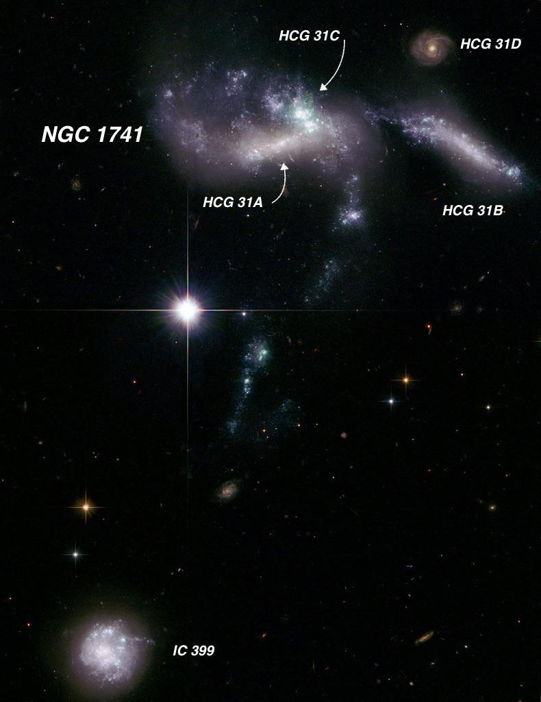
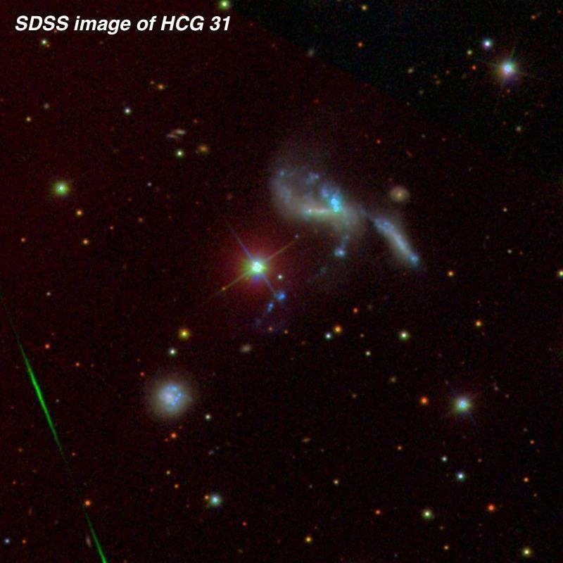
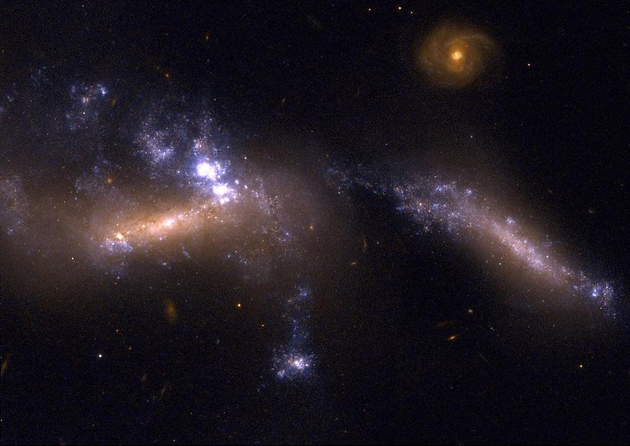

HCG 31 = Arp 259, an strongly interacting triplet
- Name: NGC 1741 = HCG 31 = Arp 259 = VV 524 = VV 565 = MCG -01-13-045
- RA: 05h 01m 38s
- Dec: -04° 15.4'
- Type: Galaxy Group
- Size: 1.5'
- Mag: V ~ 12.5-13
French astronomer Édouard Stephan discovered NGC 1741 on 6 Jan 1878 using the 31" silver-on-glass reflector at the Marseille Observatory. He called it "extremely faint; very small; not much condensation; small faint spot, a little eccentric" and his position matches the brightest component (HCG 31A).

NGC 1741 is a major merger of two distorted spirals and is clearly experiencing a very strong star-formation event. NGC 1741 forms components A and C of the galaxy group HCG 31, which lies at a distance of roughly 165 million light years. NGC 1741 is clearly interacting with HCG 31B to its right, which is also undergoing an intense burst of star-formation.
A stream of stars and gas pulled out from the interaction heads south in the direction of IC 399 = Mrk 1090. A couple of tidal dwarfs are in the process of forming in this tail. IC 399 is also a physical member of this group, but was not included by Hickson. The HST image resolves tiny, blue HII knots, strung out like beads on a necklace. The merging quartet are considered dwarfs, similar in size to the LMC, and due to their close separation of ~75,000 l.y. are expected to merge into a single large elliptical.
Note: The small face-on spiral (HCG 31D) is not a member of a group, lying far in the background at a light-travel time of 1.2 billion years, and is a challenge (V mag ~17.8) even in large scopes.

You'll probably need an 8" or 10" to spot NGC 1741 and perhaps a 12" to resolve it as a merged pair (A/C). More aperture will reveal more structural detail, of course. The B component (V = 14.7) is also visible in a 12"-16" scope (depending on your skies). IC 399 is a bit easier than the B component , although it has a similar mag (V = 14.8). Finally, I've never seen HCG 31D in my 18-inch, though as expected it was seen as a small "knot" in Jimi's 48-inch, perhaps 6" diameter.
As always,
"Give it a go and let us know!"
